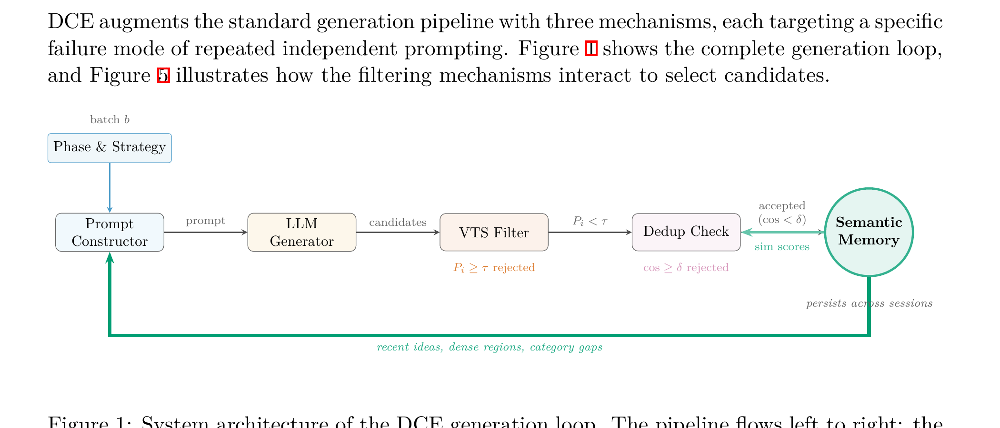
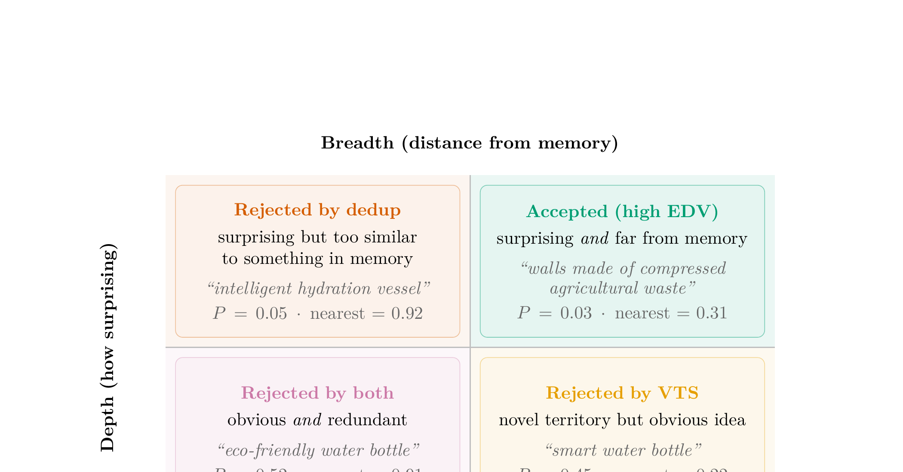
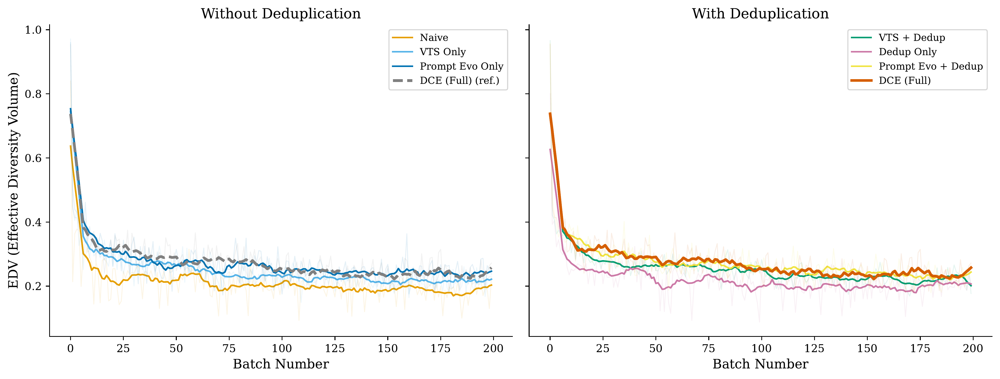

Large language models produce repetitive output when prompted independently across many batches, a phenomenon we term cross-batch mode collapse: the progressive loss of output diversity when a language model is prompted repeatedly without access to its prior generations. Practitioners have long mitigated this with ad hoc deduplication and seed rotation, but no principled framework exists.
We introduce Dynamic Context Evolution (DCE), comprising three mechanisms: (1) verbalized tail sampling, which filters high-probability candidates via model self-assessment; (2) semantic memory, which maintains a persistent embedding index to reject near-duplicates across batches; and (3) adaptive prompt evolution, which reconstructs the generation prompt each batch using memory state and rotating diversity strategies.
In experiments across three domains and two model families, a component ablation across 3 random seeds shows that DCE achieves 0.0 ± 0.0% collapse versus 5.6 ± 2.0% for naive prompting, while producing 17–18 HDBSCAN clusters per seed versus naive's volatile 2–17. These results hold across sensitivity sweeps and are validated with an independent embedding model, at approximately $0.50 per 1,000 candidates using only standard API calls with no fine-tuning required.



@article{lingo2026dynamic,
title={Dynamic Context Evolution for Scalable Synthetic Data Generation},
author={Lingo, Ryan and Chhajer, Rajeev},
journal={arXiv preprint arXiv:XXXX.XXXXX},
year={2026}
}